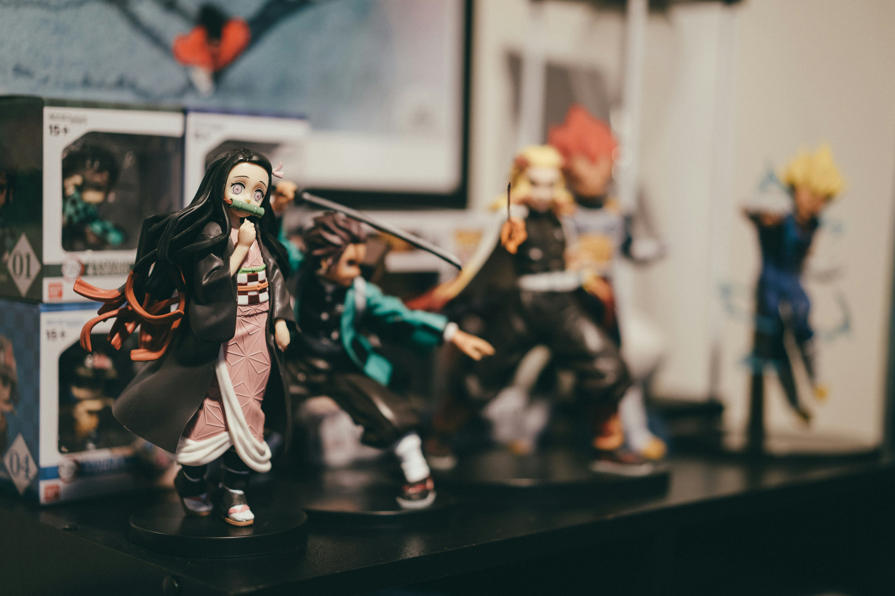
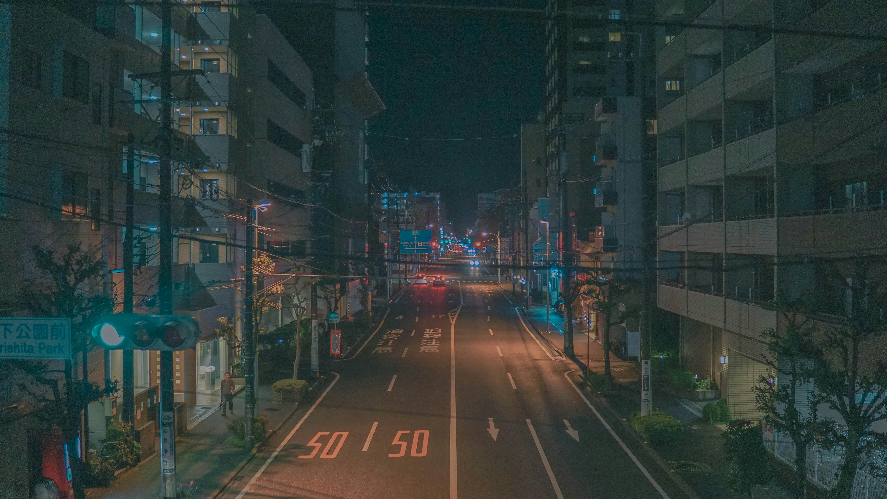

Demon Slayer: Kimetsu no Yaiba
September 25, 2024 by Samara Stewart

Demon Slayer: Kimetsu no Yaiba has taken the anime world by storm with its breathtaking animation and emotional storytelling. The series follows Tanjiro Kamado, a kind-hearted boy who becomes a demon slayer after his family is slaughtered and his sister Nezuko is turned into a demon.
The animation quality by Ufotable is simply phenomenal, particularly during the intense sword fight sequences. Each battle is choreographed like a beautiful dance, with stunning visual effects that bring the Water Breathing and other breathing techniques to life. The character development throughout the series is exceptional, making you truly care about each member of the Demon Slayer Corps.
Dororo: A Tale of Redemption
September 20, 2024 by Samara Stewart

Dororo is a dark fantasy anime that tells the story of Hyakkimaru, a boy who was born without limbs, skin, eyes, ears, or any other body parts due to his father's pact with demons. The series follows his journey to reclaim his body parts by defeating the demons that possess them.
What makes Dororo particularly compelling is the relationship between Hyakkimaru and the young orphan thief Dororo. As they travel together, we see Hyakkimaru gradually rediscover his humanity while Dororo learns about trust and friendship. The anime explores deep themes of sacrifice, humanity, and the consequences of one's actions in a beautifully animated package.